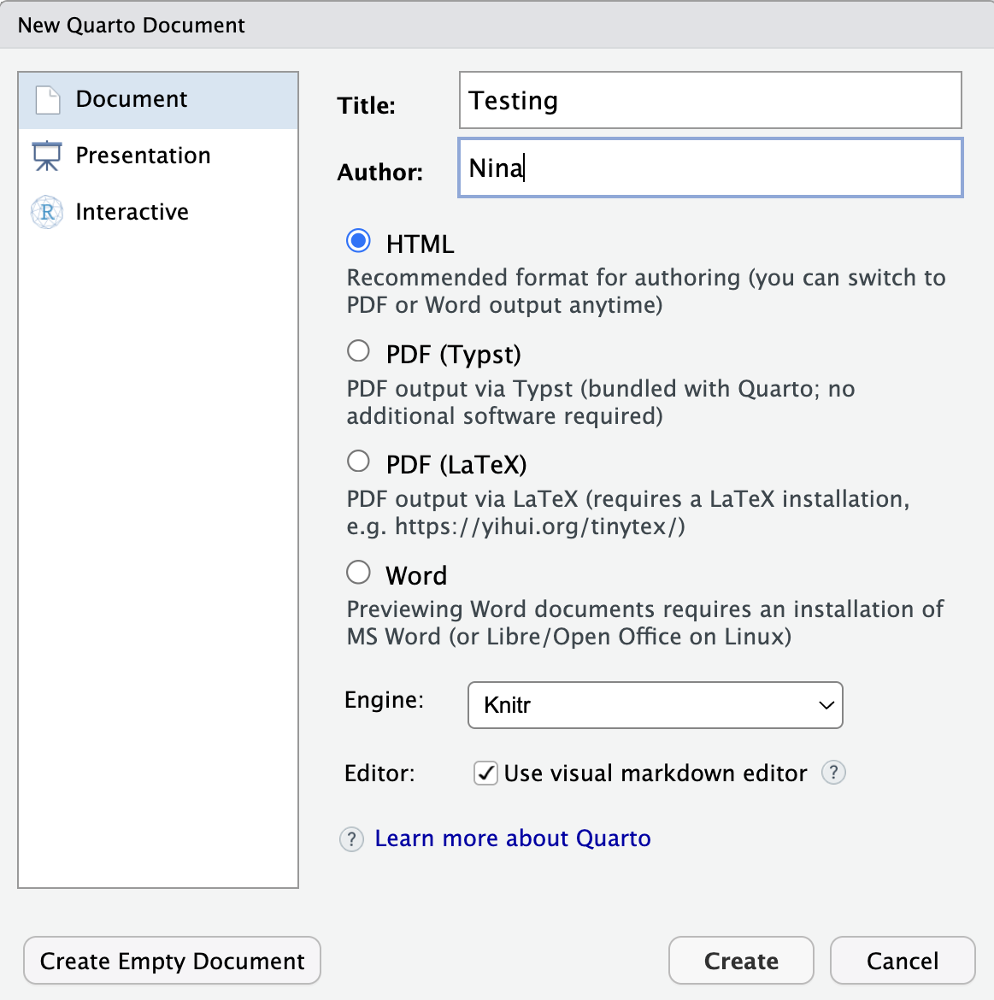
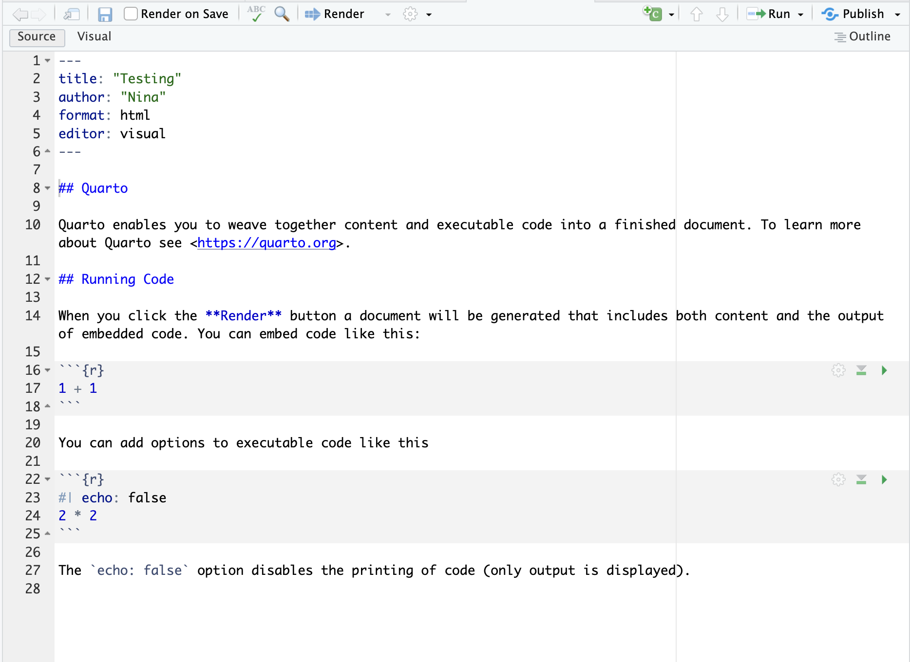
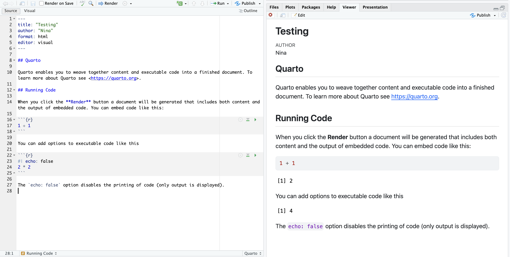
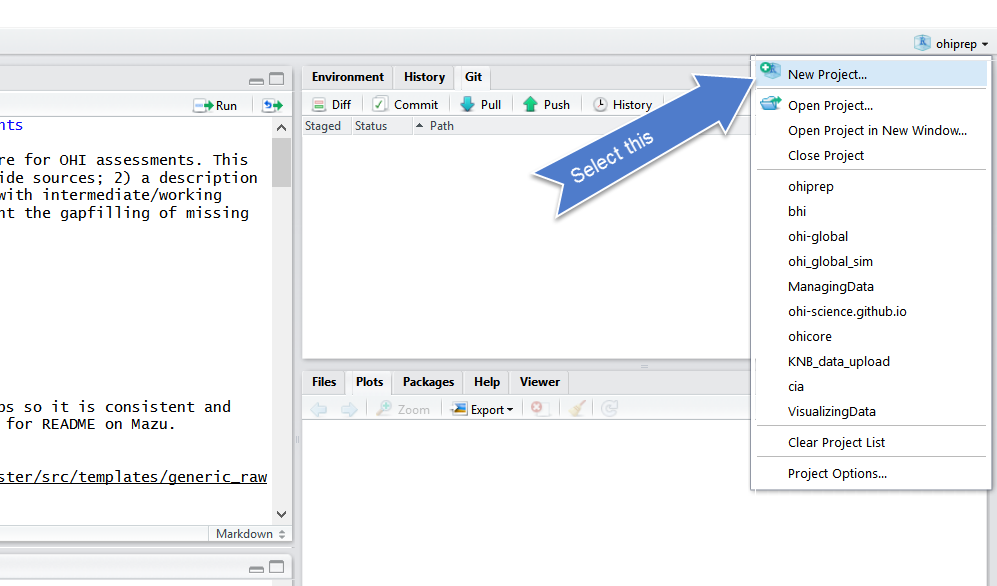
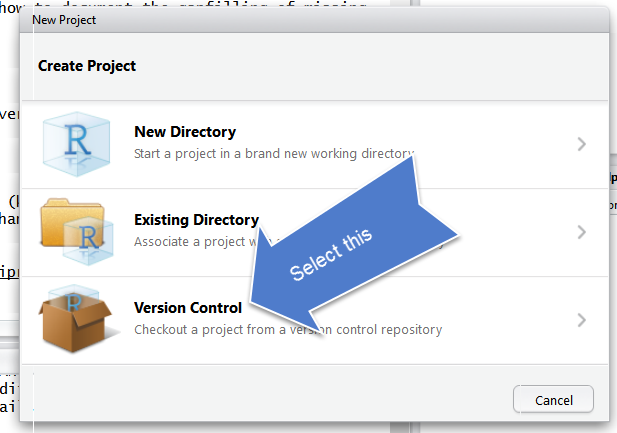
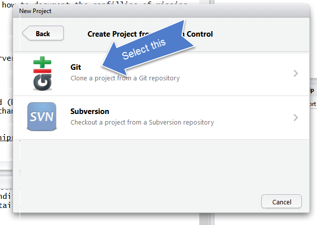
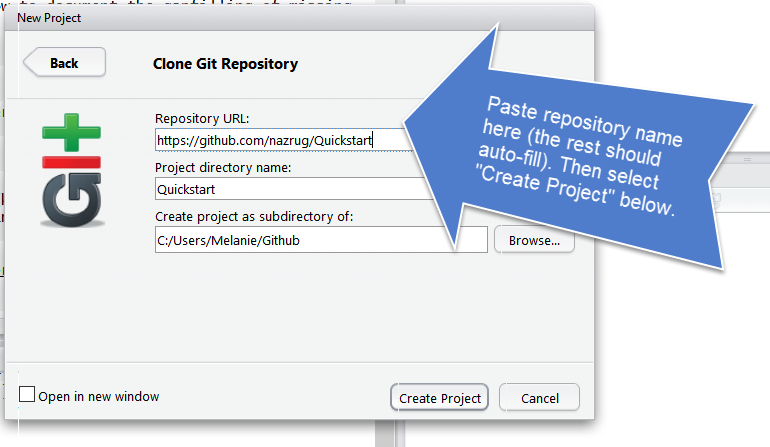
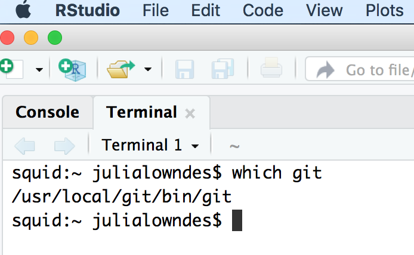
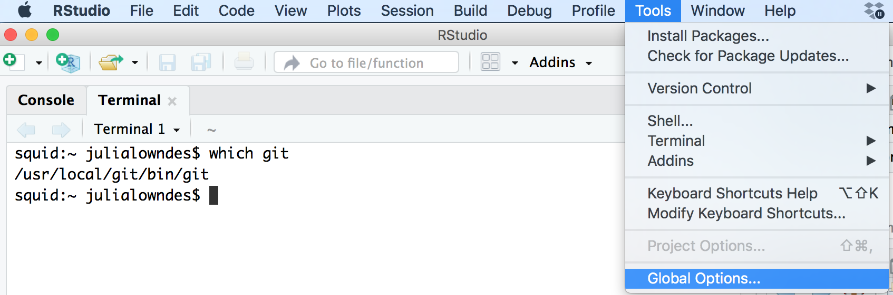
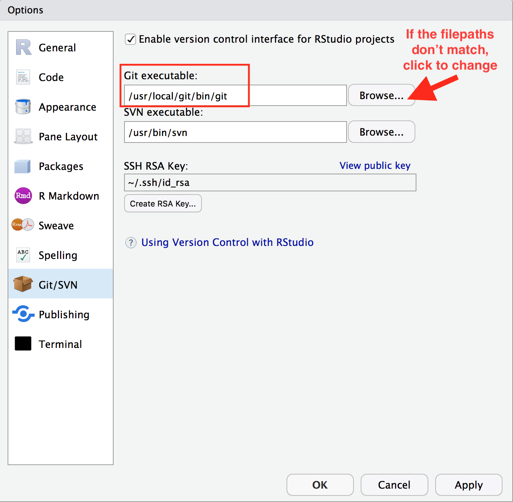

Required:
- Chapters 28 and 29 in R
for Data Science (2e)
- Have a look at the Quarto
website
Additional resources:
- Quarto
Tutorial: Hello, Quarto
- Quarto
Tutorial: Computations
- Comprehensive guide to using
Quarto [great look-up resource]
Required:
- Chapter 1 in
Jenny Bryan’s Happy Git with R
Additional resources:
- Excuse me, do you have a
moment to talk about version control? by Jenny Bryan
- GitHub for
Project Management by Openscapes
lecture-chat channel in Slack. Feel
free to post questions or let us know if you’re having software issues
or can’t get demos to work on your computer during the lecture.By the end of today’s class, students should be able to:
Acknowledgements: This lecture retains material adapted (with permission) from the excellent R for Excel users course by Julia Stewart Lowndes and Allison Horst, updated here for Quarto.
A Quarto file is a plain-text file that allows us to write code and text together. When we render the document, the text is formatted and the code is executed so that we create a reproducible report or document that is nice to read as a human.
This is really critical to reproducibility, and it also saves time. Your figures, tables, numerical results, and text can all live together in the same document. So no more:
do analysis → save plot → paste plot into Word → change analysis → re-save plot → re-paste plot → realize the number in paragraph 3 is now wrong…
Instead, the document can recreate the results directly from the code.
For R users, Quarto uses knitr to execute the R code and Pandoc to turn the resulting document into the final output format. You don’t need to worry much about those pieces right now, but it is useful to know what is happening behind the scenes.
At a high level:
Quarto source (.qmd) → execute code → render →
HTML / PDF / Word / other formats
How does Quarto relate to R Markdown?
If you have used R Markdown before, Quarto will look very familiar. R Markdown (
.Rmd) and Quarto (.qmd) both allow us to combine narrative text, Markdown formatting, executable R code, figures, and other output in a single reproducible document.Quarto is a newer publishing system developed by Posit that builds on many of the ideas and tools underlying R Markdown. For R code, both systems use knitr to execute code, and both use Pandoc to create finished documents.
So why are we using Quarto? Quarto provides a more modern and consistent framework for creating reproducible documents. It supports R as well as other languages such as Python and Julia, has improved support for things like figures, tables, citations, cross-references, websites, and presentations, and uses a more consistent syntax for document and code-cell options.
If you already know R Markdown, you do not need to re-learn everything. Most of what you know about Markdown, R code chunks, knitr, and reproducible documents carries directly over to Quarto. And if you encounter an
.Rmdfile in an existing project, there is no reason to panic—or necessarily to convert it. R Markdown is still widely used and supported.For this course, however, we will use Quarto for new documents.
Now let’s explore the Quarto format ourselves.
It’s very easy to get started with Quarto within RStudio. Let’s do this together:
File → New File → Quarto Document…
Let’s title it “Testing”, write our name as author, and select HTML as the output format.

Save the file as:
testing.qmd
The .qmd extension tells us that this is a Quarto
document.
OK, first off: by opening a file, we are using the Source pane of RStudio, which is a text editor. This lets us write and organize files within RStudio rather than doing everything directly in the Console.
Let’s have a high-level look through the new document. There are three important pieces:

At the very top of the document you should see something like:
---
title: "Testing"
author: "Your name"
format: html
editor: visual
---This is the YAML header. YAML is used to specify information and options that apply to the whole document.
Here we are telling Quarto:
title — the title of the documentauthor — the author of the documentformat: html — the format we want Quarto to create when
we render the documenteditor: visual — tells RStudio to open the document
using its Visual Editor by defaultQuarto documents can be edited in RStudio in either Visual or Source mode. Visual mode provides a word-processor-like interface where formatting, links, lists, tables, etc. appear much as they will in the finished document. Source mode shows the underlying Markdown syntax.
You can switch between Visual and
Source at any time using the buttons at the top of the
editor. They are simply two different ways of editing the same
.qmd file—switching between them does not change
the type of document.
Even if you prefer working in Visual mode, it is useful to understand what the underlying Markdown looks like. We will therefore spend some time today working in Source mode so you become familiar with the basic syntax.
We can add many more options later. For now, the important thing is the distinction:
YAML controls the document; Markdown contains the narrative; code performs the computation.
Let’s go ahead and click Render at the top of the Quarto document.
Quarto will ask us to save first if we haven’t already.
And now we’ve made an HTML file! This is a webpage that we are viewing locally on our own computer.
Rendering the Quarto document did two things:
Let’s look at the .qmd source and the rendered HTML
side-by-side.

Pair up with the person next to you and discuss what you notice when you compare the source document and the rendered document.
Some things to look for:
Then we’ll have a brief share-out with the group. (5 mins)
Now let’s look more closely at the text in our Quarto document.
Markdown is a formatting language for plain text, and there are only a handful of rules you need to know to get started. Instead of using buttons to format text, as you might in Word, we use simple characters to indicate things like headings, bold text, lists, and links.
Here is an overview of some of the Markdown formatting we will use most often:
| What you want | Markdown syntax |
|---|---|
| Heading | ## Heading |
| Bold text | **Bold text** |
| Italic text | *Italic text* |
| Inline code | `mean(x)` |
| Bulleted list | - Item |
| Numbered list | 1. Item |
| Link | [Cornell University](https://www.cornell.edu) |
| Image |  |
You can find a more complete overview in the Quarto Markdown Basics guide.
One nice thing about Markdown is that the source file remains quite readable even before we render it.
Headers are created using #. The number of
# symbols indicates the level of the heading:
# First-level heading
## Second-level heading
### Third-level headingWe can use a few simple symbols to format text:
This text is **bold**.
This text is *italic*.
This is `R code` within a sentence.Links use the following syntax:
[Cornell University](https://www.cornell.edu)The text in square brackets is what the reader sees, and the URL goes in parentheses.
For a bulleted list:
- first item
- second item
- third itemFor a numbered list:
1. first item
2. second item
3. third itemWe can also add images directly to a Quarto document:
Markdown can also be used to create simple tables. For example, this Markdown:
| Species | n | Mean length |
|:--------|--:|------------:|
| Cod | 12 | 43.2 |
| Haddock | 18 | 38.7 |will render as:
| Species | n | Mean length |
|---|---|---|
| Cod | 12 | 43.2 |
| Haddock | 18 | 38.7 |
Notice that the alignment of the : in the separator row
controls the alignment of each column:
:--- = left aligned---: = right aligned:---: = centeredYou don’t need to memorize this syntax. In practice, we will often create figures and tables directly from R, which has the advantage that they are automatically updated when our data or analysis changes.
Make the following changes to your Quarto document:
Now let’s look at the executable R code.
R code is written in code cells (also commonly called code chunks). A basic R cell looks like this:
```{r}
summary(cars)
```The three backticks mark the beginning and end of the cell, and
{r} tells Quarto that the code inside is R.
Let’s add this code cell to our document and then render it.
What happened?
Quarto:
summary(pressure);
``` r
summary(cars)
```
```
## speed dist
## Min. : 4.0 Min. : 2.00
## 1st Qu.:12.0 1st Qu.: 26.00
## Median :15.0 Median : 36.00
## Mean :15.4 Mean : 42.98
## 3rd Qu.:19.0 3rd Qu.: 56.00
## Max. :25.0 Max. :120.00
```Often we want more control over what happens when a cell is rendered.
In Quarto, the recommended syntax for cell options is to put them on
lines beginning with #| at the top of the code cell.
For example:
```{r}
#| echo: false
plot(pressure)
```The code runs, but the code itself is not displayed in the finished document.
Here are four options you will use frequently:
#| echo: false — run the code but don’t display the
code.#| eval: false — display the code but don’t run
it.#| warning: false — don’t display warnings.#| message: false — don’t display messages.Another useful option is:
#| include: false — run the code but don’t display
either the code or its output.For example, we might use include: false for setup code
that needs to run but would clutter the report.
Try each of these in your document:
#| echo: false to a cell and render.#| eval: false and render again.The point is not to memorize every Quarto option. It is to understand that we can control what gets executed and what the reader sees. When you need an option later, look it up.
We can also give a cell a label:
```{r}
#| label: pressure-summary
summary(pressure)
```Labels help us organize larger documents and become especially useful when we want to refer to figures and tables.
Labels should be unique within a document.
Labels help us organize larger documents and become especially useful when we want to refer to figures and tables. Labels should be unique within a document.
Quarto makes it easy to treat figures as actual document elements rather than images that we manually paste into a report.
For example:
```{r}
#| label: fig-pressure
#| fig-cap: "Relationship between temperature and pressure."
plot(pressure)
```Because the label starts with fig-, Quarto knows that
this is a figure.
We can refer to it elsewhere in the document using:
See @fig-pressure.Quarto will automatically number the figure and create the cross-reference.
You don’t need to memorize this today. The important idea is that the figure, its caption, the code that created it, and the text referring to it can all be connected in the same reproducible document.
Sometimes we want a result from R to appear directly inside a
sentence. For example, suppose we want our document to say how many rows
are in the cars dataset.
We could type the number ourselves. But what happens if the data change?
Instead, we can use inline R code:
The cars dataset contains `{r} nrow(cars)` observations.When we render the document, R calculates the value and Quarto
inserts it into the sentence:
The cars dataset contains 50 observations.
This is a small example of a very powerful principle:
If a value can be generated from the data, let the computer generate it rather than copying and pasting it manually.
Rendering the document runs the code needed to create the finished document, but we usually don’t want to render the entire document every time we are experimenting with a line of code.
We can run code interactively from a Quarto code cell and send it to the R Console.
Put your cursor on a line of R code and:
For example:
summary(pressure)The result appears in your interactive R session.
Place your cursor anywhere inside the cell and use the Run menu to select Run Current Chunk, or use the small run controls associated with the cell.
You’ll also see options for running cells above or below the current one.
When should you write code in a file, and when should you type it directly in the Console?
We write things in the Quarto file that are necessary for our analysis and that we want to preserve for reproducibility.
The Console is useful for quick calculations, testing functions, looking at help pages, or experimenting.
A good general rule:
If you might need it again, put it in a file.
There is an important difference between code that works interactively in your current R session and a document that renders successfully.
When you render a Quarto document with R, the document should contain the information needed to recreate its results.
This helps reveal problems such as:
So rendering is not just a way to make something pretty.
A successful render is one useful test of whether your analysis is reproducible.
You will encounter errors. This is normal.
If your document doesn’t render:
AI can also be useful for explaining an unfamiliar error message, but the goal is still to understand what went wrong and why the proposed fix works.
Practice what you’ve learned by creating a brief CV in Quarto.
The title should be your name, and you should include headings for at least:
Each section should include a bulleted list of jobs, degrees, or experiences.
Also:
- highlight years in **bold**; - use *italics* somewhere appropriate (for example, for a degree, position, or publication title); - add a link to your department, lab, institution, or personal website; - add a footnote with some additional information; - add a horizontal rule (`—`) to visually separate two parts of your CV.
Render the document to HTML.
If you’re comfortable, share the rendered result or a screenshot with
the class in the lecture-chat channel in Slack.
So far we have rendered our Quarto document to HTML, but Quarto can produce many different formats from the same source document.
For example:
format: htmlcan become:
format: pdfor:
format: docxQuarto can also create presentations, websites, books, manuscripts, dashboards, and other outputs.
We are not going to learn all of those today.
The important idea is:
The source document contains the content and computation; the output format controls how that content is presented.
For today’s exercises, we will render to HTML because it is easy to view and lets us see how Quarto turns our source document into a polished report.
For much of this course, however, we will use GitHub Flavored
Markdown (GFM) as our output format. In Quarto, this output
format is specified as format: gfm. GFM is a version of
Markdown designed to display well on GitHub, which will allow us to
integrate our Quarto documents directly into our Git/GitHub workflow. We
will set that up later—you don’t need to worry about the details
yet.
Before we wrap up for today, we are going to set up Git and GitHub, which we will be using along with R and RStudio for the rest of the course.
Before doing the configuration, let’s take a moment to talk about what Git and GitHub actually are.
Git is version-control software that runs on your computer. It tracks changes to files over time.
GitHub is an online service that stores Git repositories and provides tools for collaboration.
It can be tempting to think of GitHub as being like Dropbox, because both can put copies of your files in the cloud. But Git is much more deliberate about recording versions.
Rather than simply keeping the latest copy of a file, Git lets us create a history of meaningful changes.
This allows us to:
analysis_final_FINAL_v2.R.We will learn the actual Git workflow in much more detail next class. Today our goal is simply to make sure Git, GitHub, and RStudio can communicate.
Before we can use Git and GitHub from RStudio, we need to do some initial setup. Git needs to know who you are so that your commits can be attributed to you. This step should only need to be completed once on each computer you use.
We also need to store login credentials for our GitHub account in the form of a GitHub personal access token (PAT). The token we create below will have an expiration date. When it expires, you will need to create a new token and store the new token on your computer. So if GitHub authentication suddenly stops working several months from now, an expired PAT is one of the first things to check.
We’ll use the usethis package to help us with both parts
of the setup.
usethisIf you do not already have usethis installed, install it
with:
install.packages("usethis")Remember that installing and loading a package are two different things:
install.packages() downloads and installs a package on
your computer. You generally only need to do this once.library() loads, or attaches, an
installed package so that you can use its functions in your current R
session. You need to do this again each time you start a new R session
and want to use the package.Now load usethis:
library(usethis)When usethis is successfully attached, you won’t
necessarily get any feedback in the Console. So unless you get an error,
this worked for you.
Git needs to know who you are so that the changes you make can be attributed to you.
Run:
use_git_config(
user.name = "Your Name",
user.email = "you@example.com"
)Replace "Your Name" with your name and
"you@example.com" with the email address associated with
your GitHub account.
This is generally a one-time setup on each computer.
Next, we need to allow Git on your computer to authenticate with your GitHub account.
GitHub does not accept your normal GitHub account password for Git operations over HTTPS. Instead, we will use a personal access token (PAT).
A PAT is essentially a special password that Git and RStudio can use to authenticate with GitHub. You will create the token once and store it securely on your computer. Git can then retrieve it when needed, so you should not need to enter it every time you interact with GitHub.
First, run:
usethis::create_github_token()Notice the :: notation here. This means “use the
create_github_token() function from the
usethis package.” Because we specify the package
explicitly, this would work even if we had not first run
library(usethis).
Running this command will open GitHub in your web browser. You may be asked to sign in to GitHub.
You should see a page for creating a new personal access token with several settings already filled in for you.
Note: Give the token a descriptive name that
will remind you where you are using it, for example
NTRES 6100 - laptop.
Expiration: Choose an expiration period. GitHub recommends that tokens expire, so you may need to create a new token in the future.
Scopes: usethis will pre-select the
permissions it recommends. For this course, you can leave these
selections as they are.
Scroll to the bottom of the page and click Generate token.
GitHub will now display your new token. It will be a long string of letters and numbers.
Copy the token immediately. GitHub will only show you the complete token once.
We will use another R package called `gitcreds` to store the token securely on your computer. This allows Git and RStudio to retrieve your token automatically when they need to communicate with GitHub, so you won’t have to enter it every time.
First install gitcreds:
install.packages("gitcreds")Now run:
gitcreds::gitcreds_set()Here we are using :: to call a function directly from
the gitcreds package, so we do not need to run
library(gitcreds) first.
You should see a prompt in the Console that looks something like:
? Enter password or token:Paste your GitHub token at this prompt and press Enter.
Nothing may appear as you paste the token. This is normal. Password and token prompts hide what you type for security.
gitcreds will store the token using your computer’s
credential manager. Once it is stored, Git and RStudio can retrieve it
when they need to communicate with GitHub.
Important: Treat your personal access token like a password. Do not put it in an R script, Quarto document, Slack message, email, or GitHub repository. If you accidentally share a token, revoke it on GitHub and create a new one.
Finally, let’s make sure that RStudio can communicate with Git and GitHub.
In RStudio, go to:
File → New Project… → Version Control → Git


Since we are using git.


If yes, hooray! Time to wrap up for today! You’re now ready for exploring integrated GitHub/RStudio workflows next week.
If you don’t see Git as an option under Version Control, or you encounter an error, you do not yet have Git properly linked to your RStudio setup. Let us know and we will troubleshoot your setup.
One useful troubleshooting command is:
usethis::git_sitrep()This prints a summary of your Git and GitHub configuration and can help us identify what isn’t working.
First, confirm that you are using the correct GitHub login credentials (are you sure you typed in the correct user name and password?)
Next, look through Happy Git With R’s RStudio, Git, GitHub Hell troubleshooting chapter.
If usethis fails, the following is the classic approach
to configuring git. Open the Git Bash program (Windows)
or the Terminal (Mac) and type the following:
# display your version of git
git --version
# replace USER with your Github user account
git config --global user.name USER
# replace NAME@EMAIL.EDU with the email you used to register with Github
git config --global user.email NAME@EMAIL.EDU
# list your config to confirm user.* variables set
git config --listThis will configure git with global (--global) commands,
which means it will apply ‘globally’ to all your future github
repositories, rather than only to this one now. Note for
PCs: We’ve seen PC failures correct themselves by doing the
above but omitting --global. (Then you will need to
configure GitHub for every repo you clone but that is fine for now).
Sometimes you may this error:
error key does not contain a section --global terminaland
fatal: not in a git directoryTo solve this, go to the Terminal and type:
which git

Look at the filepath that is returned. Does it say anything to do with Apple?
-> If yes, then the Git you downloaded isn’t installed, please redownload if necessary, and follow instructions to install.
-> If no, (in the example image, the filepath does not say anything with Apple) then proceed below:
In RStudio, navigate to: Tools > Global Options > Git/SVN.

Does the “Git executable” filepath match what the url in Terminal says?

If not, click the browse button and navigate there.
Today we introduced two tools that will become part of our normal workflow:
Quarto helps us keep code, results, figures, and narrative together in a reproducible document.
Git/GitHub helps us keep a deliberate history of changes and collaborate on those files.
Neither is something you need to master today.
Over the next several weeks, we will use them repeatedly until the workflow starts to feel normal.